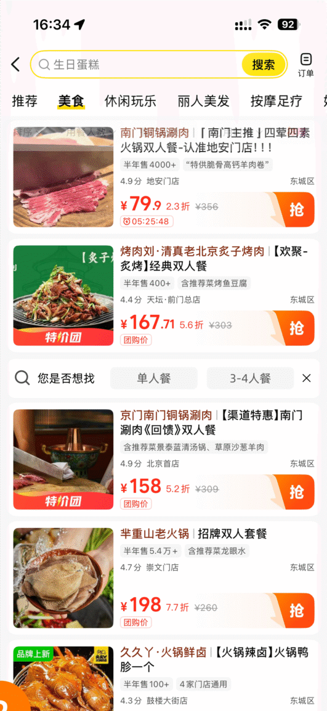
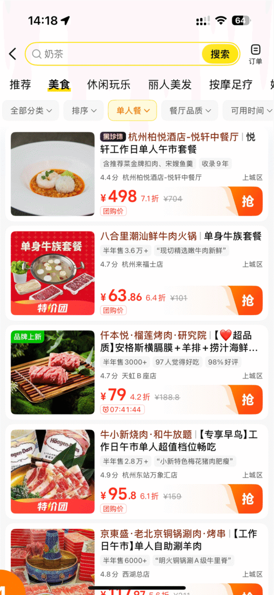

筛选 UV 点击率提升
M3W4 → M7W3


当推荐模型无法快速迭代，
界面能否先帮用户向前一步？
团购频道汇集美食、休闲娱乐、丽人等不同供给。用户往往边浏览边形成需求，而已有筛选和卡片信息，并没有充分承接这些决定。
这份案例以用户侧的产品干预为切入点：先让筛选有序，再让它适时出现，最后让商品卡片给出更有用的选择理由。
参考 Xiaohan Yan 的 2025 美团产品实习案例；原方案与界面素材归原作者所有，本页重新组织中文叙事与视觉展示。M3W4 → M7W3
筛选体系 · A/B 累计结果
卡片信息优化 · 餐饮供给口径
数据来源：Xiaohan Yan 原案例。各项指标对应不同实验与统计范围，不作加总。
统一筛选分类与运营规则
围绕品类与决策条件适配
从浏览行为中承接潜在意图
重新安排商品卡片信息
不是不断增加入口，
而是让每个入口都有明确的用途。
补齐用餐人数、餐厅品质等基础条件，贴近用户真正的购买判断。
人数 / 品质 / 时间 / 包间美食看本地口碑，KTV 关注房型；让不同品类出现对应的筛选内容。
本地推荐 / 品类条件区分核心、场景与促销筛选，约定位置、样式及评估退出规则。
统一分类 / 持续治理一个运营入口的短期曝光，
不应以整条筛选栏的清晰度为代价。
反复查看相似套餐之后，
在刚刚浏览的卡片下方，轻轻提醒一次。
浏览列表 → 查看套餐 → 返回列表 → 继续重复寻找
识别行为 → 提示筛选 → 用户选择 → 刷新匹配结果
选择一个条件，查看反馈
状态示意，仅用于体验交互，不连接真实商品数据。提示出现在最后点击的卡片下方，而不是抢占页面顶部。
会话内只出现一次；已有筛选时不再提示，避免重复打扰。
提供建议条件，由用户主动选择后，再更新对应结果。
当卡片都写着“随时退”，
真正能帮助比较的差异，反而被淹没。
原案例通过多组实验比较信息顺序。先呈现品类相关性与评价信息，再补充榜单背书、历史行为和服务权益。
筛选分类和信息优先级，让后续迭代有共同依据。
理解行为不等于替用户决定；保留选择和关闭的权利。
关注点击后的购买行为，判断提示是否真的带来有效匹配。
原案例为产品实习项目。本页为参考案例的中文网页化整理，界面素材归原作者所有；页面视觉、章节编排与交互演示为本次新增。